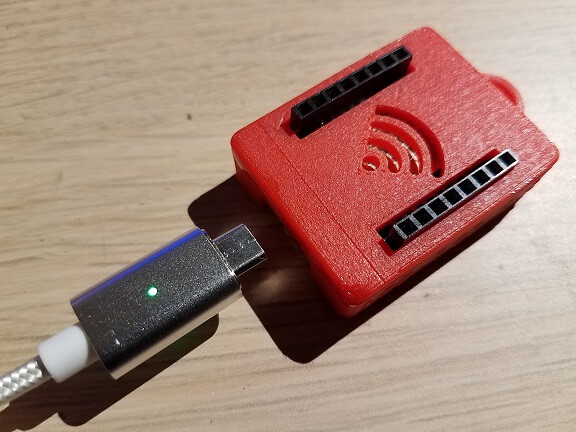
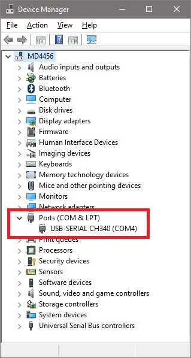
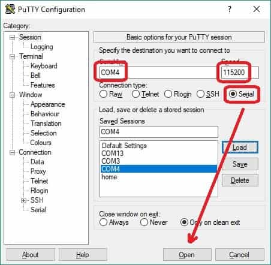
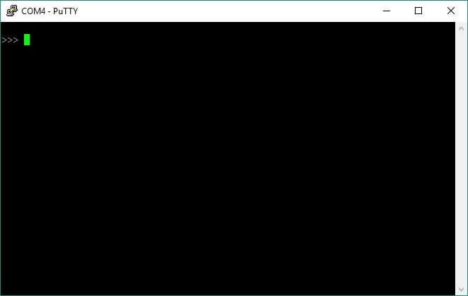

Step #1
To begin using your Personal Pocket Cloud, plug a standard micro USB cable into the botton of the device and plug the other end into some type of power supply. This can be a phone charger or the USB port of a computer. To do programming and data transfer, the cable should support data as well as power.

Step #2
On Windows, the device will cause a device driver to automatically installed. This will ultimately create a new serial port on the computer. You can use the Device Manager to find exactly which serial (COM) port the device is on. You will need to know this to begin communicating with the device.
Step #3
Use a simple serial terminal application to connect to the new serial port with these settings:

You should see the familiar python prompt of three greater-than signs (>>>). Now you may begin entering MicroPython commands.